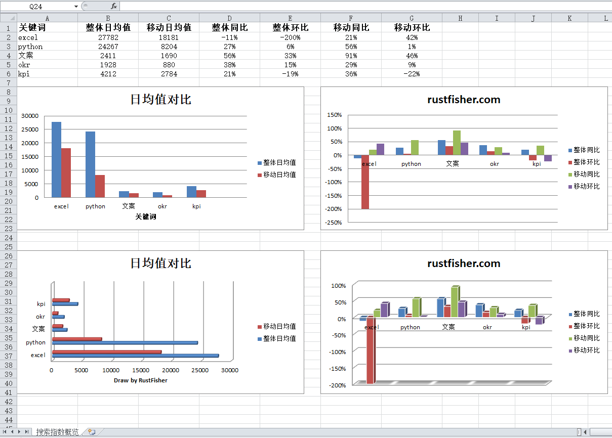

【运营的Python指南】Python Excel 绘制柱形图
这是一份写给运营人员的Python指南。本文主要讲述如何使用Python操作Excel绘制柱形图。
相关代码请参考 https://github.com/RustFisher/python-playground
本文链接：https://www.rustfisher.com/2019/11/19/Python/Python-op-excel_openpyxl_bar_column_chart/
开发工具，环境
- PyCharm
- Python3
- Office Excel
前面我们已经创建好了一张Excel表。
现在我们要根据已有的数据，往里面添加柱形图。
柱形图 BarChart
参考《Python openpyxl Excel绘制柱形图》得知，我们主要使用BarChart与BarChart3D类。
图表中许多的细节由BarChart属性控制。
后文都以chart1来表示柱形图对象 chart1 = BarChart() 。
数据来源范围 Reference
首先我们应该确定数据的范围。有数据才好绘图。这里使用的是Reference类来表示数据“引用”范围。1
2data1 = Reference(st, min_col=2, min_row=1, max_row=7, max_col=3)
cats1 = Reference(st, min_col=1, min_row=2, max_row=7)
需要注意的是，范围的下标是从1开始的。
这里的data1把标题也框进去了。设定数据的时候，需要设置titles_from_data=True1
chart1.add_data(data1, titles_from_data=True)
设置种类使用set_categories方法，也是把一个范围（Reference）的数据传入。1
chart1.set_categories(cats1)
柱子方向控制 type
方向由属性type来控制，有2个可选参数：bar表示横向，col表示竖直。
1 | |
标题 title
属性title控制标题。如果置为None则不显示标题。
图表的标题 chart1.title = "日均值对比"
坐标的标题，首先需要拿到x，y的坐标。1
2chart1.y_axis.title = '数值'
chart1.x_axis.title = st.cell(column=1, row=1).value # 直接用单元格的内容做标题
添加图表
add_chart将图表添加到sheet中。图表的左上角对齐某个单元格。下面是对齐A8。1
st.add_chart(chart1, 'A8')
3D柱形图 BarChart3D
柱子的形状 shape
默认是立方体，但也可以从下面的形状里选一个。
{'box', 'pyramid', 'pyramidToMax', 'coneToMax', 'cone', 'cylinder'}
1 | |
box 是立方体，中规中矩。
pyramid 是金字塔，顶部也是尖的。
cone 是圆锥，看起来很尖锐。
cylinder 是圆柱。
配色风格 style
style 会影响图表的配色风格，一般用10比较多彩多样。
代码示例
绘制图表用的数据来自运营的Python指南 - Python 操作Excel。
我们在已有的表格中添加柱形图。代码参考python-playground - Github
绘制2D柱形图
1 | |
绘制3D柱形图
1 | |
运行结果示例图片
